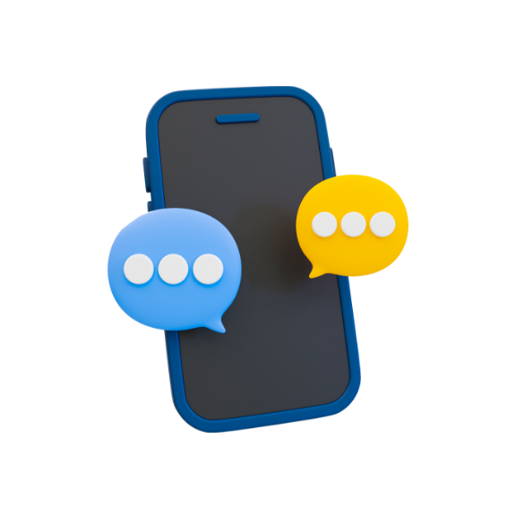

휴대폰안심(native)
홈
보안 검사
네트워크 검사
웹 검사
더보기
URL 검사
세이프브라우징
메시지 탐지

실시간 메시지 탐지 중
현재 발견된 위험 메시지는 없어요.
메시지 탐지 중단 하기
탐지된 링크 결과
2023.02.01 11:10:12
검사 완료된 메세지
000개
위험한 링크가 포함된 메세지
000개
000개
000개
000개
안내사항
- 메시지 탐지를 통해 검사 완료된 메세지에 위험한 링크가 발견될 경우 알림을 제공합니다.
- 탐지할 메시지 앱을 추가할 수 있습니다.
추가하기 >
- 메시지 알림 설정이 되어 있지 않은 경우 메시지 탐지가 불가합니다. 메시지 설정에서 알림을 허용해주세요.